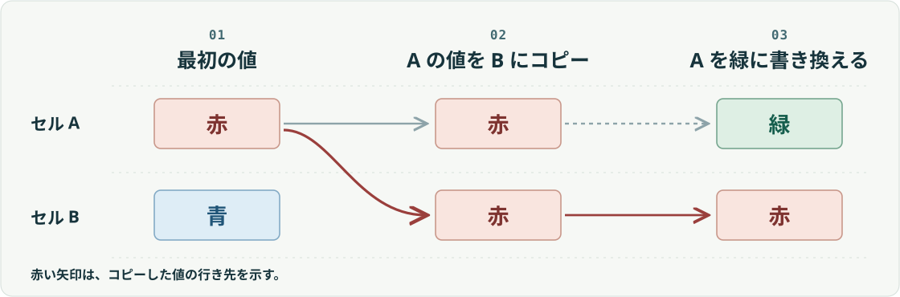

01 / 06 · LONG-CONTEXT EVALUATION
StateBenchで測る、
AIが変更履歴から最終値を追う力
表計算で、赤と書かれたセルAの値だけをBに貼り付けます。その後、Aを緑に変えました。Bに残るのは何色でしょう。AIに長い作業記録を渡すときも、答えを出すには、コピーした時点の値を覚えておく必要があります。
変更履歴を扱う開発者・業務担当者向け ／ Ai2の11月3日発表を読む
ONE-PAGE BRIEF ／ 値の行き先を追う

- 01 最初の値A 赤 B 青
- 02 Aの値をBにコピーA 赤 B 赤
- 03 Aを緑に書き換えA 緑 B 赤
値の決まり方を4段階に分ける
Ai2の研究チームは、文書に登場する対象の値が途中でどう変わるかを追う能力を調べるため、StateBenchを作りました。「最後に書かれた値を拾う」だけで解けるかどうかで、読むべき範囲が変わります。
- 01固定値
- 最初に決まった値を探す。
- A は 4 のまま r-trivial
- 02値で上書き
- 最後に指定された値を拾う。
- A ← 2 aperiodic
- 03自分の値から更新
- それまでの値に、次の操作を適用する。
- A ← A + 1 soluble
- 04他の値を参照
- 別の変数がその時点で持つ値を移したり、二つの値を交換したりする。
- B ← A general finite
分類は論文に基づき、式は各操作の特徴を示した簡略例です。論文・StateBenchの構成
同じ長さの記録でも、必要な手掛かりが違う
次の二つは、どちらも最終的にBが赤になります。AIに求める答えは同じでも、そこまでに確認する内容が異なります。
値を直接指定する記録
「Bを赤にする」と書いてあれば、その後Bが書き換わっていないことを確かめれば足ります。
別のセルを参照する記録
「BにAの値を入れる」と書いてある場合は、そこで一度Aの履歴に戻ります。コピーの前にAに何が入っていたかで、Bの答えが決まります。
StateBenchでは、元になる一連の操作から難しさの違う版を作ります。変数の数、値の種類の数、代入が出てくる位置をそろえ、操作の種類を変えて比較します。
上の二つの記録は編集部の例です。Ai2による比較条件の説明
4モデルとも、長い参照の連鎖で正答率が下がった
研究チームは Gemini 3.8 Flash、Claude Opus 5.5、GPT-6 Sol、GPT-6 Luna に、代入の列を読んで全変数の最終値を生成させました。論文の図6は、入力の長さに応じた、この課題での正答率を示しています。
- 高い正答率を保った操作
- 値が固定された問題と、定数で上書きする問題。
- 長くなると難しくなった操作
- 自分の値を使う更新と、他の変数を参照する更新。どちらも途中の値を引き継ぐ必要があります。
他の変数を参照する問題（general finite）のうち、入力が最も長い条件では、4モデルの正答率はいずれも13%以下だったとAi2は報告しています。Ai2の発表
この実験では追跡する変数の数が決まっています。会議や問い合わせの途中で新しい案件や人物が次々に加わる場合の精度は、別に調べる必要があります。
自分の変更履歴で、どの操作が抜けるかを確かめる
例えば、担当変更の記録から案件ごとの最終担当者をまとめる仕事なら、次の小さなテストを作れます。編集部の試し方です。
- 同じ正解になる二通りの履歴を作る架空の案件AとBを用意し、「Bの担当を佐藤さんに変更」と「Bの担当を今のAと同じ人に変更」を書き分けます。その時点のAは佐藤さんにします。
- 途中でAの担当だけを変える変更を順に反映した正解表を用意します。操作の順序と件数をそろえ、二通りの履歴を同じモデルに別々に渡します。
- 最終担当者を案件ごとに照合する「正しく答えた案件数 ÷ 全案件数」と、全案件が一致したケース数を記録します。取り違えたら、どの長さ・どの参照操作で誤答が出たかを見比べます。
データと評価条件を原典で確かめる
- Ai2の発表（2026年11月3日）4段階の狙い、モデル別の評価、変数の数を固定した設定。
- A Fine-Grained Hierarchy and Benchmark for State Tracking in Language ModelsStateBenchの問題構成、図6の生成評価、付録の入力形式例。
- 研究チームのデータセット評価に用いるデータの公開ページ。
- 研究チームのGitHubリポジトリ操作列の生成ルール、設定、表現形式。